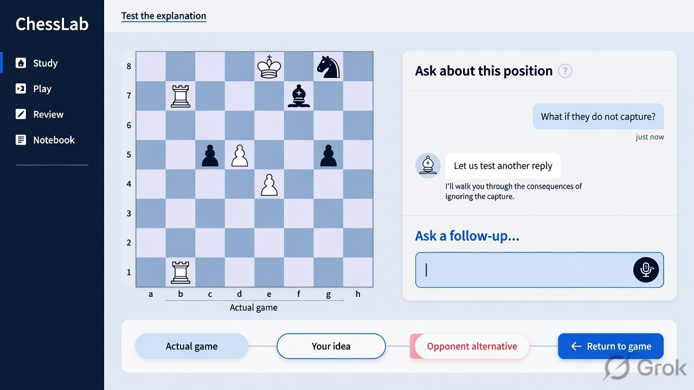

THE COMPLETE LEARNING JOURNEY
A coach you
can question.
Start a game. Challenge the explanation. Follow a different reply. Find your way back.
Seventeen blue-themed Imagine mockups, informed by your recorded session and the original ChessLab vision.
Enter the conversation ↗
THE CENTRAL INTERACTION · Ask → test → returnNo matching scenarios. Try another word.